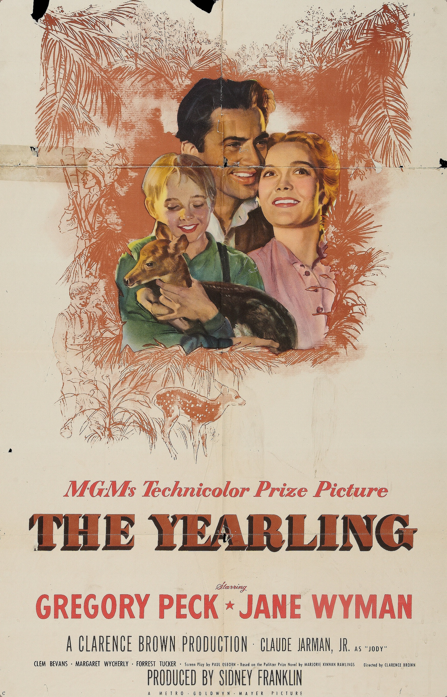

The Yearling
19th Academy Awards
(Oscars 1947)
7 Nominations, 2 Awards
| Nominations | ||
|---|---|---|
| Category | Nominees | Result |
| Best Motion Picture | Metro-Goldwyn-Mayer | Nominated |
| Actor | Gregory Peck | Nominated |
| Actress | Jane Wyman | Nominated |
| Directing | Clarence Brown | Nominated |
| Cinematography (Color) | Arthur Arling, Charles Rosher, and Leonard Smith | Won |
| Film Editing | Harold Kress | Nominated |
| Art Direction (Color) | Cedric Gibbons, Edwin B. Willis, and Paul Groesse | Won |